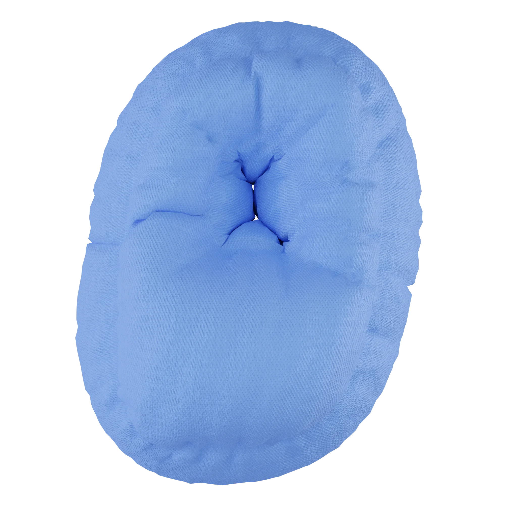
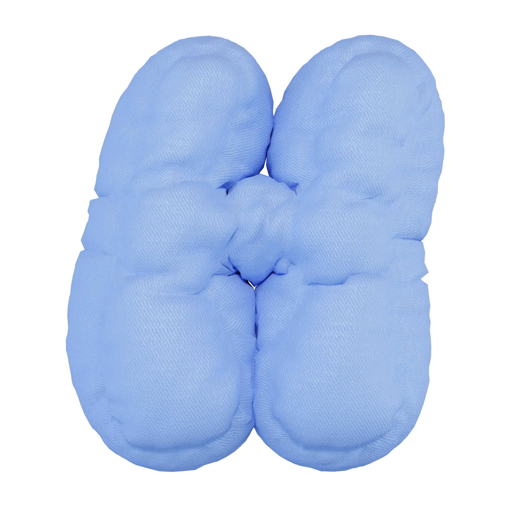
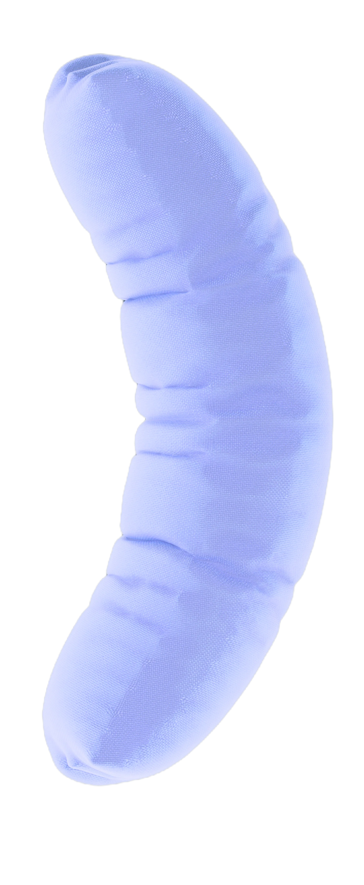

Мы — медиа про
сон и сновидения
значения образов
в сновидениях
улучшение качества
сна и жизни
познание себя и раскрытие
своего внутреннего мира
о нас
Наш проект родился из желания помочь людям соприкоснуться
с уникальным миром подсознания.
узнать подробнее
П чему м е это снится?
Есть ли какой-то с ысл
в моих сн х?
  

Мы тоже размышляли над этим. Изучая психологию, культуру и научные подходы, мы пришли к выводу, что сновидения — это не только случайные образы, а сон — крайне важная часть нашей жизни.
Наша миссия — создание платформы, которая поможет каждому разобраться в своих сновидениях и глубже понять природу самого сна.

факты
про сон
Время
Примерно четверть всей
своей жизни мы проводим во сне
сон — это время, когда мы
возвращаемся к себе
сон — это время, когда мы
возвращаемся к себе